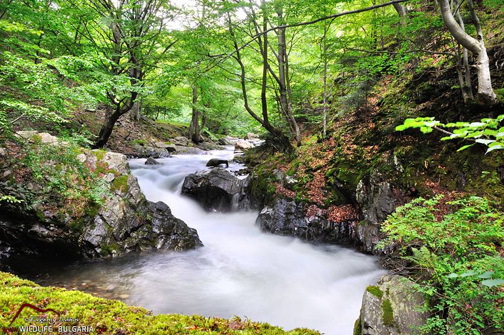

Природата на Карлово – планини, реки и резервати
Карлово се намира в подножието на Централните Балкани и е заобиколено от красиви планини, зелени гори и множество реки. Този район предлага невероятни природни забележителности, които привлекат туристи и природолюбители от цялата страна и чужбина.
Сред най-значимите природни обекти в Карлово са Национален парк „Централен Балкан” и природните резервати „Стара река” и „Караджов камък”. Те предлагат живописни пътеки за туризъм, богатство на флора и фауна, както и невероятни гледки към планините и долините.
Реката Стара река, която преминава през Карлово, е важен воден ресурс за региона. Тя е основен приток на река Марица и също така осигурява възможности за водни спортове и туризъм. Водопадите и скалните образувания около реката са сред природните чудеса на Карлово.
Регионот е идеален за планински туризъм през всички сезони. През лятото, туристите могат да се насладят на прохлада в горите, а през зимата – на снежни пейзажи и възможности за ски и зимни спортове в близост до карловските хижи.
В допълнение, Карлово е част от Пътя на розите, което означава, че в региона се отглеждат едни от най-добрите рози в България, които създават уникална атмосфера в пролетния и летен период.